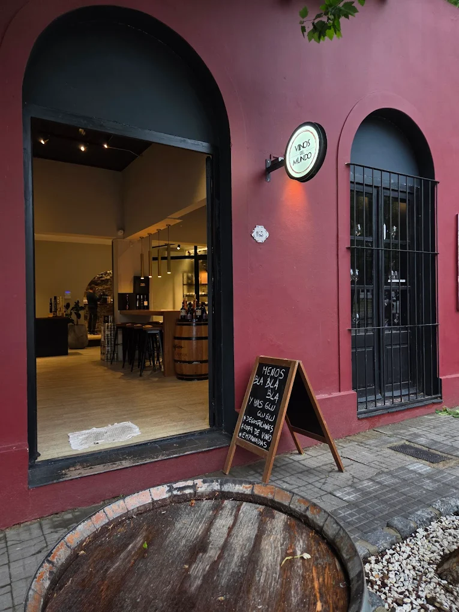
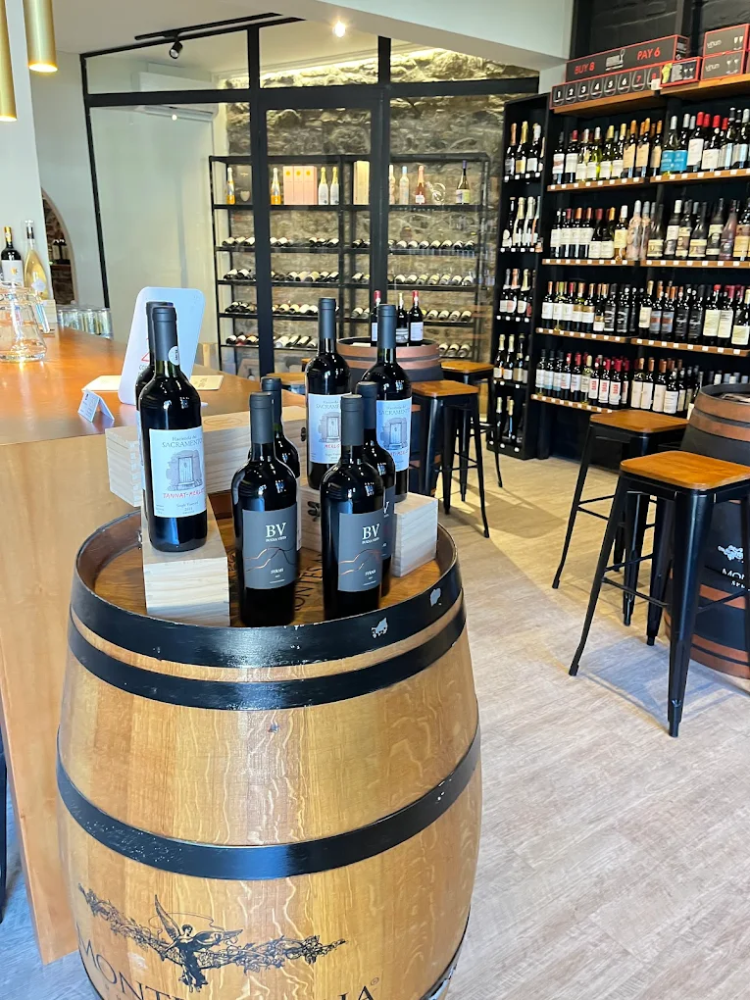
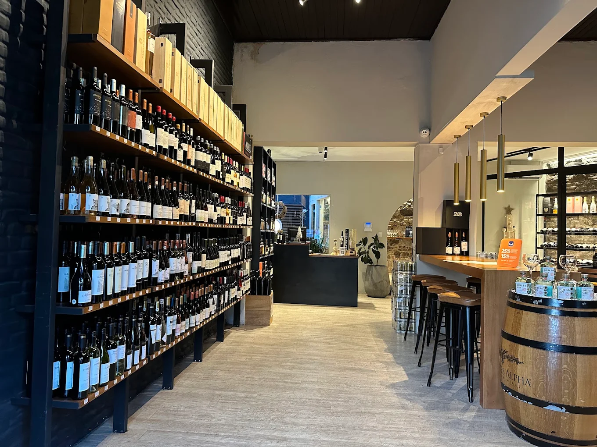
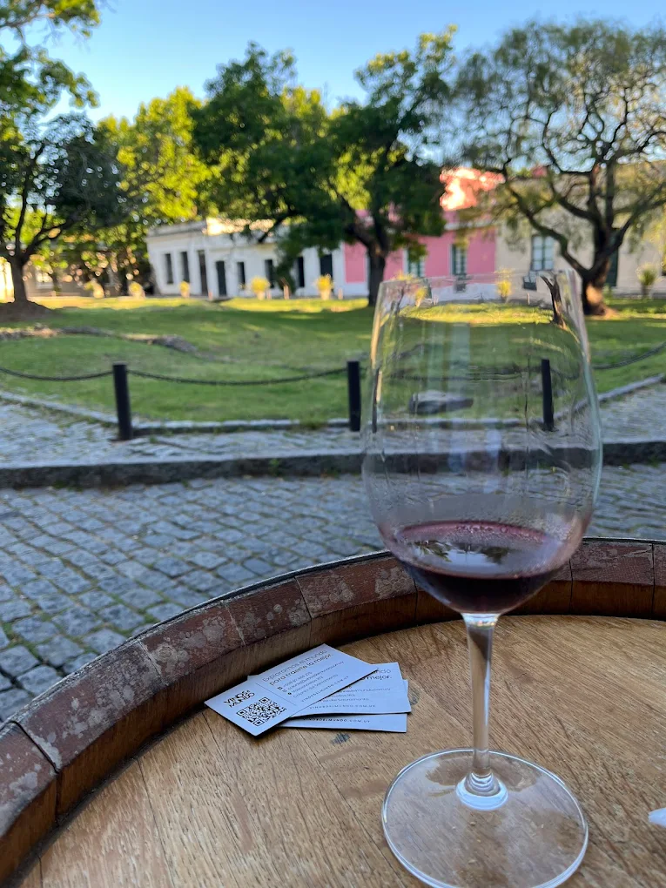

Discover a unique wine experience at Vinos del Mundo, a charming wine shop located in the heart of Colonia del Sacramento’s Historic Quarter. Surrounded by cobblestone streets and colonial architecture, this experience invites you to explore wines from different regions of the world in a cozy and authentic setting.
Guided by local experts, you will taste a curated selection of wines, learn about their origins, aromas, and characteristics, and enjoy a relaxed and sophisticated moment in one of the most beautiful corners of the city.



